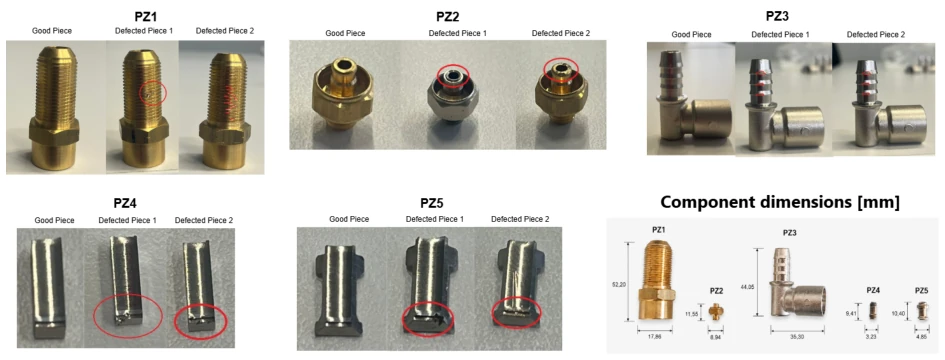
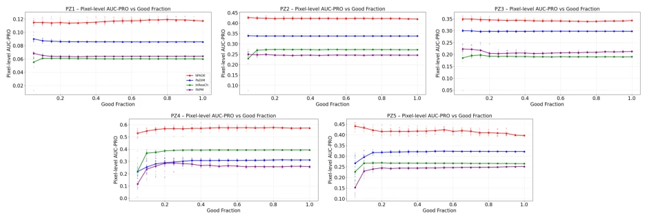
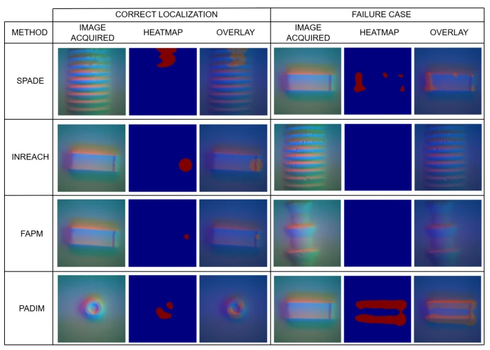

Anomaly Detection on Small Industrial Components via Vision-Based Tactile Sensing
G. F. Preziosa, M. Casiglia, M. Faroni, A. M. Zanchettin, P. Rocco abspdf
论文点评Review
这篇论文给触觉传感器做了个“体检”，试图证明它能在工业质检里挑大梁。虽然视觉主导检测，但小零件几何缺陷在 RGB 上信号弱，光学方案受限。作者没发明新算法，而是把四个现成的无监督 AD 方法（SPADE、PaDiM 等）搬到 GelSight 上跑。结果挺有意思：SPADE 定位最强但吃数据，PaDiM 喜欢高清图。最大的槽点是凝胶磨损，采集过程真的会消耗传感器寿命，导致数据获取成本上升。这算是给触觉 AD 领域立了个标杆，但也暴露了接触式传感的硬伤——耐用性和数据效率的博弈。对于想搞触觉质检的团队，这文是必读的避坑指南，毕竟传感器寿命也是成本，且高分辨率未必总是最优解，需根据实际部署条件权衡。
This paper conducts a "check-up" on tactile sensors, attempting to demonstrate its capability to play a leading role in industrial quality inspection. Although vision dominates inspection, geometric defects of small parts exhibit weak signals on RGB, limiting optical solutions. The authors did not invent new algorithms but instead adapted four existing unsupervised AD methods (SPADE, PaDiM, etc.) to run on GelSight. The results are quite interesting: SPADE offers the strongest localization but is data-intensive, while PaDiM prefers high-resolution images. The most significant drawback is gel wear; the acquisition process genuinely consumes sensor lifespan, leading to increased data acquisition costs. This sets a benchmark for the tactile AD field but also exposes the inherent limitation of contact sensing—the trade-off between durability and data efficiency. For teams pursuing tactile quality inspection, this paper is a must-read guide to avoid pitfalls, as sensor lifespan is also a cost, and high resolution is not always the optimal solution, requiring trade-offs based on actual deployment conditions.
研究动机Motivation
工业质检需要灵活，但小零件缺陷（如微小毛刺、螺纹不规则）在 RGB 图像上信号弱，难以可靠观察 [1]。现有基准如 MVTec AD 多是光学图像，缺乏触觉数据 [3]。无监督 AD 需要大量正常数据，但缺陷样本稀缺且难以分类。触觉传感器（如 GelSight）能捕捉微米级几何，但接触会磨损凝胶，且采集吞吐量低 [5]。本文旨在解决：到底需要多少正常样本？不同位置能否泛化？高清图是否必要？现有工作未系统评估触觉 AD 在真实工业组件上的表现，特别是针对接触磨损和分辨率权衡的约束。这填补了从光学到触觉的 AD 评估空白，为小零件质检提供了新视角，解决了传统光学方案在微小几何缺陷检测上的盲区问题。
Industrial quality inspection requires flexibility, but small part defects (such as tiny burrs, thread irregularities) exhibit weak signals on RGB images and are difficult to observe reliably [1]. Existing benchmarks like MVTec AD are mostly optical images, lacking tactile data [3]. Unsupervised AD requires large amounts of normal data, yet defect samples are scarce and difficult to classify. Tactile sensors (such as GelSight) can capture micron-level geometry, but contact causes gel wear, and acquisition throughput is low [5]. This paper aims to address: how many normal samples are actually needed? Can it generalize across different positions? Is high-resolution imaging necessary? Existing work has not systematically evaluated the performance of tactile AD on real industrial components, particularly regarding constraints of contact wear and resolution trade-offs. This fills the AD evaluation gap from optical to tactile, providing a new perspective for small part quality inspection and addressing the blind spot of traditional optical solutions in detecting minute geometric defects.

Fig. 1. Overview of the five inspected industrial components and their reference dimensions.
The overall workflow is: GelSight Mini acquires contact images -> Wide-ResNet-50 extracts features -> unsupervised modeling. All four methods utilize Feature-Embedding, with the backbone network frozen and not trained. SPADE stores multi-scale features for matching, utilizing nearest neighbor localization; PaDiM fits Gaussian distributions to calculate Mahalanobis distance, modeling spatial distribution using regularized covariance; FAPM uses a prototype library to compress features with adaptive selection; InReaCh utilizes channel consistency to filter rare patterns. High-resolution images are processed using a patch strategy (divide-and-conquer) with overlapping stitching. All methods are based on ImageNet pre-trained weights, extracting only features to adapt to the need for rapid adaptation to new components in industrial scenarios, reducing training costs. This design avoids the reliance of reconstruction-based methods on defect samples, making it more suitable for industrial scenarios dominated by defect-free data. After feature extraction, different methods construct different normality models in the feature space, finally outputting anomaly score maps, deployable without additional training.
实验Experiments
5 个真实零件（PZ1-PZ5），含螺纹、连接器等，LR/HR 分辨率。三个验证：Good Fraction（样本量影响）、Cross-Position（位置泛化）、LR vs HR。指标 AUROC/AUPRC/AUC-PRO@0.01。SPADE 定位最好但需全量数据；PaDiM/FAPM 受益于 HR 和少量目标位置样本；InReaCh 在 HR 下不稳定。证实了触觉 AD 可行，但需权衡磨损与精度。实验显示凝胶确实消耗，2 个凝胶用完，验证了物理限制。结果表明确实存在一个“稳定 Good Fraction”，超过后性能不再提升，这对实际部署有指导意义。跨位置测试表明少量目标样本即可校准模型，降低了部署门槛。
5 real parts (PZ1-PZ5), containing threads, connectors, etc., with LR/HR resolution. Three validations: Good Fraction (sample size impact), Cross-Position (position generalization), LR vs HR. Metrics: AUROC/AUPRC/AUC-PRO@0.01. SPADE localization is best but requires full data; PaDiM/FAPM benefit from HR and a small number of target position samples; InReaCh is unstable under HR. This confirms tactile AD is feasible but requires a trade-off between wear and accuracy. Experiments show gel is indeed consumed, with 2 gels used up, verifying physical limits. Results indicate there is indeed a "stable Good Fraction", beyond which performance no longer improves, which has guiding significance for actual deployment. Cross-position tests show that a small number of target samples can calibrate the model, lowering the deployment threshold.
其他图片Other Figures

Fig. 4. Validation 1: AUC-PRO@0.01 vs. Good Fraction for each component, all four methods plotted together (SPADE: red, PaDiM: blue, InReaCh: green, FAPM: purple). SPADE consistently attains the highest localization score across all five components. The gap is most pronounced on the sub-centimetre-scale components PZ4 and PZ5.

Fig. 5. Qualitative localization examples for the evaluated feature-embedding methods. Each image is a triptych reporting input, anomaly heatmap, and overlay.